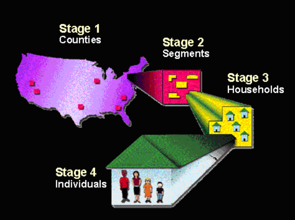
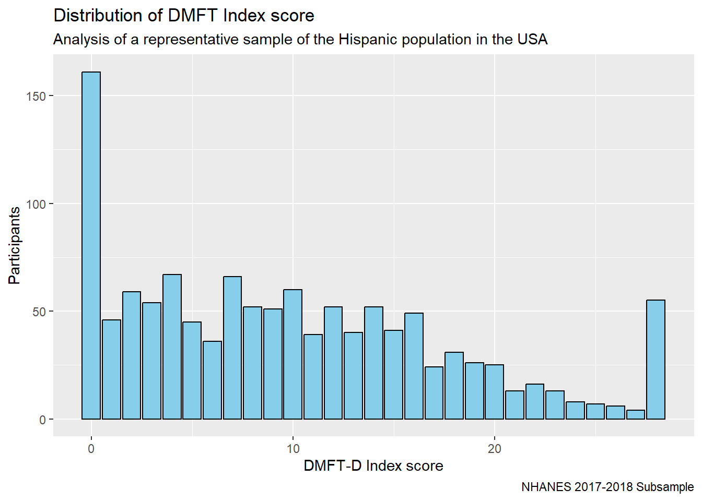
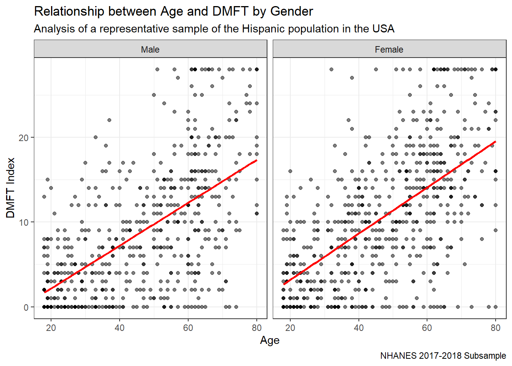
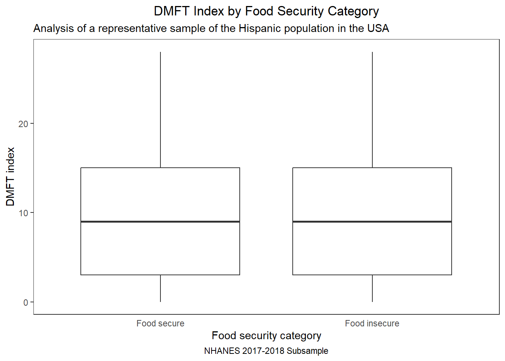

knitr::include_graphics("NHANES_sampling.png")
Prior research has established a link between household food security and dental caries in the general U.S. population (bahanan_2021?). However, there is a lack of evidence exploring this association within different ethnic groups, which may be exposed to different social determinants of health. I aim to analyze the association between household food security on dental caries— measured by the DMFT index—among the Hispanic adult population in the United States. The findings could help healthcare providers better understand the social factors contributing to dental caries in this population, leading to more targeted preventive strategies. Additionally, this research may inform policymakers, health program developers, and epidemiologists in creating social programs aimed at addressing food insecurity and advancing health equity.
Data for this data analysis is from the National Health and Nutrition Examination Survey (NHANES), a nationally representative survey conducted by the Centers for Disease Control and Prevention (CDC) and the National Center for Health Statistics (NCHS).
NHANES Sampling design: Image from CDC (n.d.b)
This study is based on the data from the 2017-2018 cycle CDC (n.d.a). Data was analyzed from the following questionnaires: Demographics, Oral Health, and Food Security; as well as the Oral Health and Dentition component from the examination section.
Selection the NHANES data files and variables of interest
demo <- read_xpt("DEMO_J.XPT")
ohexam <- read_xpt("OHXDEN_J.XPT")
foodsec <-read_xpt("FSQ_J.XPT")
ohques <- read_xpt("OHQ_J.XPT")
#demo: 9254 obs 46 variab
#join all 3 datasets
nhanes_data <- left_join(ohexam, demo, by = "SEQN")
nhanes_data <- left_join(nhanes_data, foodsec, by = "SEQN")
nhanes_data <- left_join(nhanes_data, ohques, by = "SEQN")
#8366 obs with a complete dental examination
#select variables: SEQN, 8 demo, 3 foodsec, 1 ohques, 56 ohexam, total 69
nhanes_data <- nhanes_data %>%
select(SEQN, RIDAGEYR, RIAGENDR, DMDMARTL, DMDEDUC2, INDHHIN2, DMDHHSIZ, RIDRETH3, DMDCITZN, FSQ162, FSQ012, FSDHH, OHQ770, OHX02TC, OHX03TC, OHX04TC, OHX05TC, OHX06TC, OHX07TC, OHX08TC, OHX09TC, OHX10TC, OHX11TC, OHX12TC, OHX13TC, OHX14TC, OHX15TC, OHX18TC, OHX19TC, OHX20TC, OHX21TC, OHX22TC, OHX23TC, OHX24TC, OHX25TC, OHX26TC, OHX27TC, OHX28TC, OHX29TC, OHX30TC, OHX31TC, OHX02CTC, OHX03CTC, OHX04CTC, OHX05CTC, OHX06CTC, OHX07CTC, OHX08CTC, OHX09CTC, OHX10CTC, OHX11CTC, OHX12CTC, OHX13CTC, OHX14CTC, OHX15CTC, OHX18CTC, OHX19CTC, OHX20CTC, OHX21CTC, OHX22CTC, OHX23CTC, OHX24CTC, OHX25CTC, OHX26CTC, OHX27CTC, OHX28CTC, OHX29CTC, OHX30CTC, OHX31CTC)Population of interest: Hispanic adult population (18 years or olderm)
#Race and ethnicity
nhanes_data <- nhanes_data %>%
mutate(RACETH = factor(RIDRETH3,
levels = c(1, 2, 3, 4, 5, 6, 7),
labels = c("Mexican American", "Other Hispanic", "Non-Hispanic White", "Non-Hispanic Black", "Non-Hispanic", "Asian", "Other Race - Including Multi-Racial")))
str(nhanes_data$RACETH) Factor w/ 7 levels "Mexican American",..: 6 3 4 6 7 6 4 6 1 3 ...
Mexican American Other Hispanic
1229 738
Non-Hispanic White Non-Hispanic Black
2792 1949
Non-Hispanic Asian
0 1083
Other Race - Including Multi-Racial
575 subset_nhanes <- nhanes_data %>%
filter(RACETH %in% c("Mexican American", "Other Hispanic"))
table(subset_nhanes$RACETH)
Mexican American Other Hispanic
1229 738
Non-Hispanic White Non-Hispanic Black
0 0
Non-Hispanic Asian
0 0
Other Race - Including Multi-Racial
0 Min. 1st Qu. Median Mean 3rd Qu. Max.
1.00 12.00 33.00 35.83 59.00 80.00 subset_nhanes <- subset_nhanes %>%
filter(RIDAGEYR >= 18)
summary(subset_nhanes$RIDAGEYR) #min age is 18, and it has 70 variables like nhanes_data Min. 1st Qu. Median Mean 3rd Qu. Max.
18.00 32.00 48.00 46.83 62.00 80.00 Primary exposure: food security
In this analysis, participants with missing values for the main exposure of interest (food security) were excluded.
num [1:1271] 3 1 2 4 1 2 2 4 NA 1 ...
- attr(*, "label")= chr "Household food security category"
1 2 3 4
595 194 281 128 subset_nhanes <- subset_nhanes %>%
mutate(FOODSEC = case_when(
is.na(FSDHH) ~ NA_character_, # Keep NAs
FSDHH %in% c(2, 3, 4) ~ "1",
FSDHH %in% c(1) ~ "0"
)) %>%
mutate(FOODSEC = factor(FOODSEC,
levels = c("0", "1"),
labels = c("Food secure", "Food insecure")))
table(subset_nhanes$FOODSEC, useNA = "always")
Food secure Food insecure <NA>
595 603 73 Covariates: Gender and oral health related
num [1:1198] 1 2 2 1 1 1 1 1 2 2 ...
- attr(*, "label")= chr "Gender"
1 2
565 633 subset_nhanes <- subset_nhanes %>%
mutate(GENDER = ifelse(RIAGENDR == 1, 0,
ifelse(RIAGENDR == 2, 1, NA))) %>%
mutate(GENDER = factor(GENDER,
levels = c(0, 1),
labels = c("Male", "Female")))
table(subset_nhanes$GENDER)
Male Female
565 633 #Total teeth count per person
subset_nhanes <- subset_nhanes %>%
mutate(
across(
c(OHX02TC, OHX03TC, OHX04TC, OHX05TC, OHX06TC, OHX07TC, OHX08TC, OHX09TC, OHX10TC, OHX11TC, OHX12TC, OHX13TC, OHX14TC, OHX15TC, OHX18TC, OHX19TC, OHX20TC, OHX21TC, OHX22TC, OHX23TC, OHX24TC, OHX25TC, OHX26TC, OHX27TC, OHX28TC, OHX29TC, OHX30TC, OHX31TC),
~as.numeric(ifelse(. %in% c(1, 2), 1, ifelse(. %in% c(3, 4, 5, 9), 0, NA_character_)))
)
)
subset_nhanes <- subset_nhanes %>%
rowwise() %>%
mutate(TOTALTEETH = sum(c(OHX02TC, OHX03TC, OHX04TC, OHX05TC, OHX06TC, OHX07TC, OHX08TC, OHX09TC, OHX10TC, OHX11TC, OHX12TC, OHX13TC, OHX14TC, OHX15TC, OHX18TC, OHX19TC, OHX20TC, OHX21TC, OHX22TC, OHX23TC, OHX24TC, OHX25TC, OHX26TC, OHX27TC, OHX28TC, OHX29TC, OHX30TC, OHX31TC))) %>%
select(-OHX02TC, -OHX03TC, -OHX04TC, -OHX05TC, -OHX06TC, -OHX07TC, -OHX08TC, -OHX09TC, -OHX10TC, -OHX11TC, -OHX12TC, -OHX13TC, -OHX14TC, -OHX15TC, -OHX18TC, -OHX19TC, -OHX20TC, -OHX21TC, -OHX22TC, -OHX23TC, -OHX24TC, -OHX25TC, -OHX26TC, -OHX27TC, -OHX28TC, -OHX29TC, -OHX30TC, -OHX31TC)
str(subset_nhanes$TOTALTEETH) num [1:1198] 27 28 24 7 28 26 25 24 0 28 ... Min. 1st Qu. Median Mean 3rd Qu. Max. NA's
0.00 23.00 26.00 23.29 28.00 28.00 59 #Categorize into partial or complete edentulism
subset_nhanes <- subset_nhanes %>%
mutate(EDENTULISM = case_when(
TOTALTEETH == 0 ~ "2",
TOTALTEETH >= 24 ~ "0",
TOTALTEETH > 1 & TOTALTEETH < 24 ~ "1",
TRUE ~ NA_character_
)) %>%
mutate(EDENTULISM = factor(EDENTULISM,
levels = c("0", "1", "2"),
labels = c("Dentate", "Partial edentulism", "Edentulism")))
table(subset_nhanes$EDENTULISM)
Dentate Partial edentulism Edentulism
819 272 46 # Unmet dental care need in the last year
subset_nhanes <- subset_nhanes %>%
mutate(UNMETDC = case_when(
is.na(OHQ770) ~ NA_character_, # Keep NAs
OHQ770 %in% c(2) ~ "1",
OHQ770 %in% c(1) ~ "0",
OHQ770 %in% c(7,9) ~ NA
)) %>%
mutate(UNMETDC = factor(UNMETDC,
levels = c("0", "1"),
labels = c("No", "Yes")))
prop.table(table(subset_nhanes$UNMETDC, useNA = "always"))
No Yes <NA>
0.23622705 0.73205342 0.03171953 Covariates: other demographic variables
# Citizenship status
subset_nhanes <- subset_nhanes %>%
mutate(CITIZEN = case_when(
is.na(DMDCITZN) ~ NA_character_,
DMDCITZN %in% c(2) ~ "1",
DMDCITZN %in% c(1) ~ "0",
DMDCITZN %in% c(7,9) ~ NA
)) %>%
mutate(CITIZEN = factor(CITIZEN,
levels = c("0", "1"),
labels = c("No", "Yes")))
table(subset_nhanes$CITIZEN, useNA = "always")
No Yes <NA>
774 410 14
1 2 3 4 5 6 <NA>
577 55 99 72 176 147 72 subset_nhanes <- subset_nhanes %>%
mutate(MARITALST = case_when(
is.na(DMDMARTL) ~ NA_character_,
DMDMARTL %in% c(1,6) ~ "1",
DMDMARTL %in% c(2,3,4,5) ~"0"
)) %>%
mutate(MARITALST = factor(MARITALST,
levels = c("0", "1"),
labels = c("Single/Widowed/Divorced", "Married/Living with partner")))
table(subset_nhanes$MARITALST, useNA = "always") #check NAs
Single/Widowed/Divorced Married/Living with partner
402 724
<NA>
72
1 2 3 4 5 9 <NA>
292 185 239 285 122 3 72 subset_nhanes <- subset_nhanes %>%
mutate(EDUC = case_when(
is.na(DMDEDUC2) ~ NA_character_,
DMDEDUC2 %in% c(4,5) ~ "1",
DMDEDUC2 %in% c(1,2,3) ~"0")) %>%
mutate(EDUC = factor(EDUC,
levels = c("0", "1"),
labels = c("High school or less", "More than high school")))
table(subset_nhanes$EDUC, useNA = "always")
High school or less More than high school <NA>
716 407 75
1 2 3 4 5 6 7 8 9 10 12 13 14 15 77 99
46 31 69 74 60 135 142 88 61 59 54 28 95 148 24 76
<NA>
8 subset_nhanes <- subset_nhanes %>%
mutate(INCOME = case_when(
is.na(INDHHIN2) ~ NA_character_,
INDHHIN2 %in% c(5,6,7,8,9,10,12,14,15) ~ "1",
INDHHIN2 %in% c(1,2,3,4,13) ~ "0",
INDHHIN2 %in% c(77,99) ~ NA
)) %>%
mutate(INCOME = factor(INCOME,
levels = c("0", "1"),
labels = c("Under $20 000", "$20 000 and over")))
table(subset_nhanes$INCOME, useNA = "always")
Under $20 000 $20 000 and over <NA>
248 842 108
1 2 3 4 5 6 7
0.07679466 0.23789649 0.14524207 0.21035058 0.15191987 0.09348915 0.08430718
<NA>
0.00000000 DMFT was calculated as the total count of codes E,F,J,P,R,T,Z in the ‘Coronal Caries: Tooth Count’ segment of the dental examination.
Edentulous participants were included in the dental caries experience analyses and assigned a DMFT of 28 (since the crown surface examination protocol excluded third molars)
#Assign a value to 1 to the following letters
subset_nhanes <- subset_nhanes %>%
mutate(
across(
starts_with("OHX"),
~case_when(
str_detect(., "[EFJPRTZ]") ~ 1,
TRUE ~ 0)
))
#add the individual values from the OHX variables and then remove them
subset_nhanes <- subset_nhanes %>%
mutate(DMFT = rowSums(across(starts_with("OHX"), ~. > 0))) %>%
select(-starts_with("OHX"))
summary(subset_nhanes$DMFT) Min. 1st Qu. Median Mean 3rd Qu. Max.
0.000 3.000 9.000 9.785 15.000 28.000 num [1:1198] 13 17 15 27 0 6 12 11 28 10 ...#Check that edentulous get a DMFT of 28
subset_nhanes %>%
group_by(EDENTULISM) %>%
summarise(mean_DMFT = mean(DMFT, na.rm = TRUE))# A tibble: 4 × 2
EDENTULISM mean_DMFT
<fct> <dbl>
1 Dentate 7.09
2 Partial edentulism 16.8
3 Edentulism 27.9
4 <NA> 0.918#this means that there are some edentulous that have a value lower than 28, so we need to assign a value of 28 to all edentulous participants
subset_nhanes <- subset_nhanes %>%
mutate(DMFT = case_when(
EDENTULISM == "Edentulism" ~ 28,
TRUE ~ DMFT))
subset_nhanes %>%
group_by(EDENTULISM) %>%
summarise(mean_DMFT = mean(DMFT, na.rm = TRUE))# A tibble: 4 × 2
EDENTULISM mean_DMFT
<fct> <dbl>
1 Dentate 7.09
2 Partial edentulism 16.8
3 Edentulism 28
4 <NA> 0.918#See distribution
ggplot(data = subset_nhanes, aes(x = DMFT)) +
geom_bar(fill = "skyblue", color = "black") +
labs(x = "DMFT-D Index score", y = "Participants",
title = "Distribution of DMFT Index score",
subtitle = "Analysis of a representative sample of the Hispanic population in the USA",
caption = "NHANES 2017-2018 Subsample")
ggplot(subset_nhanes, aes(x = RIDAGEYR, y = DMFT)) +
geom_point(alpha = 0.5) +
geom_smooth(method = "lm", se = FALSE, color = "red") +
labs(title = "Relationship between Age and DMFT by Gender",
subtitle = "Analysis of a representative sample of the Hispanic population in the USA",
x = "Age",
y = "DMFT Index",
caption = "NHANES 2017-2018 Subsample") +
facet_wrap(~ GENDER) +
theme_bw()`geom_smooth()` using formula = 'y ~ x'
#boxplots for food security vs DMFT
ggplot(subset_nhanes, aes(y=DMFT, x=FOODSEC)) +
geom_boxplot() +
labs(title = "DMFT Index by Food Security Category",
subtitle = "Analysis of a representative sample of the Hispanic population in the USA",
y = "DMFT index",
caption = "NHANES 2017-2018 Subsample",
x="Food security category") +
ylim(0,28)+
theme_bw()+
theme(panel.grid.major = element_blank(),
panel.grid.minor = element_blank(),
panel.background = element_blank(),
plot.title = element_text(hjust = 0.5),
plot.caption = element_text(hjust = 0.5),
axis.ticks.x = element_blank())
#crude results: mean(sd) DMFT per food security category
crude_results <- subset_nhanes %>%
group_by(FOODSEC) %>%
summarise(meanDMFT = mean(DMFT),
sdDMFT = sd(DMFT)
)
crude_results# A tibble: 2 × 3
FOODSEC meanDMFT sdDMFT
<fct> <dbl> <dbl>
1 Food secure 9.67 7.47
2 Food insecure 9.90 8.13A good option because it’s count data and it doesn’t follow a normal distribution.
Attaching package: 'MASS'The following object is masked from 'package:dplyr':
select# Fit negative binomial regression
model1 <- glm.nb(DMFT ~ FOODSEC, data = subset_nhanes)
summary(model1)
Call:
glm.nb(formula = DMFT ~ FOODSEC, data = subset_nhanes, init.theta = 1.169931092,
link = log)
Coefficients:
Estimate Std. Error z value Pr(>|z|)
(Intercept) 2.26944 0.04013 56.554 <2e-16 ***
FOODSECFood insecure 0.02332 0.05653 0.412 0.68
---
Signif. codes: 0 '***' 0.001 '**' 0.01 '*' 0.05 '.' 0.1 ' ' 1
(Dispersion parameter for Negative Binomial(1.1699) family taken to be 1)
Null deviance: 1436.9 on 1197 degrees of freedom
Residual deviance: 1436.7 on 1196 degrees of freedom
AIC: 7976
Number of Fisher Scoring iterations: 1
Theta: 1.1699
Std. Err.: 0.0576
2 x log-likelihood: -7970.0470 (Intercept) FOODSECFood insecure
9.67395 1.02359 Waiting for profiling to be done... 2.5 % 97.5 %
(Intercept) 8.9493789 10.474137
FOODSECFood insecure 0.9162141 1.143525#theta is 1.93 so there is overdispersion
#Multiple negative binomial regression (adjusted model)
model2 <- glm.nb(data = subset_nhanes, DMFT ~ FOODSEC + GENDER + CITIZEN + MARITALST + EDUC + INCOME + DMDHHSIZ + EDENTULISM + UNMETDC)
summary(model2)
Call:
glm.nb(formula = DMFT ~ FOODSEC + GENDER + CITIZEN + MARITALST +
EDUC + INCOME + DMDHHSIZ + EDENTULISM + UNMETDC, data = subset_nhanes,
init.theta = 3.690294183, link = log)
Coefficients:
Estimate Std. Error z value Pr(>|z|)
(Intercept) 2.0918749 0.0884047 23.662 < 2e-16 ***
FOODSECFood insecure -0.0185268 0.0446387 -0.415 0.67811
GENDERFemale 0.1202089 0.0407437 2.950 0.00317 **
CITIZENYes -0.1916819 0.0469677 -4.081 4.48e-05 ***
MARITALSTMarried/Living with partner 0.1430759 0.0438327 3.264 0.00110 **
EDUCMore than high school -0.0075837 0.0448798 -0.169 0.86581
INCOME$20 000 and over -0.0008182 0.0525704 -0.016 0.98758
DMDHHSIZ -0.0386306 0.0128994 -2.995 0.00275 **
EDENTULISMPartial edentulism 0.7611543 0.0459036 16.582 < 2e-16 ***
EDENTULISMEdentulism 1.2910128 0.0929199 13.894 < 2e-16 ***
UNMETDCYes 0.0076159 0.0480786 0.158 0.87414
---
Signif. codes: 0 '***' 0.001 '**' 0.01 '*' 0.05 '.' 0.1 ' ' 1
(Dispersion parameter for Negative Binomial(3.6903) family taken to be 1)
Null deviance: 1680.2 on 936 degrees of freedom
Residual deviance: 1169.7 on 926 degrees of freedom
(261 observations deleted due to missingness)
AIC: 5959.4
Number of Fisher Scoring iterations: 1
Theta: 3.690
Std. Err.: 0.275
2 x log-likelihood: -5935.418 (Intercept) FOODSECFood insecure
8.1000878 0.9816438
GENDERFemale CITIZENYes
1.1277325 0.8255694
MARITALSTMarried/Living with partner EDUCMore than high school
1.1538174 0.9924450
INCOME$20 000 and over DMDHHSIZ
0.9991822 0.9621061
EDENTULISMPartial edentulism EDENTULISMEdentulism
2.1407458 3.6364679
UNMETDCYes
1.0076450 Waiting for profiling to be done... 2.5 % 97.5 %
(Intercept) 6.8268439 9.6181673
FOODSECFood insecure 0.8993027 1.0715375
GENDERFemale 1.0409622 1.2216647
CITIZENYes 0.7535605 0.9047467
MARITALSTMarried/Living with partner 1.0581163 1.2579299
EDUCMore than high school 0.9096243 1.0829817
INCOME$20 000 and over 0.9016252 1.1066108
DMDHHSIZ 0.9382715 0.9866276
EDENTULISMPartial edentulism 1.9572139 2.3430531
EDENTULISMEdentulism 3.0409694 4.3779248
UNMETDCYes 0.9168388 1.1068302You must summarize your analysis and/or results with a paragraph (4-6 sentences).
A total of 937 Hispanic participants with no missing data for the measured variables were included in the analysis, with 482 categorized as food secure and 455 as food insecure. 26% were partially dentate, and 4.3% were edentulous. The mean DMFT score was 10.9 for participants in food-secure households and 11.1 for those in food-insecure households. No statistically significant association was found between household food security level and DMFT score among Hispanic adult participants, either in the crude model (Prevalence ratio: 1.02, CI: 0.92-1.12) or in the model adjusted for sociodemographic and dental factors (Prevalence ratio: 0.98, CI: 0.90-1.07).
dplyr:
- left_join()
- select()
- mutate()
- filter()
- rowwise()
- summarise()
- case_when()
- across()
- group_by()
stringr:
- str_detect()
ggplot2
- ggplot()
- geom_bar()
- geom_boxplot()
- geom_point()